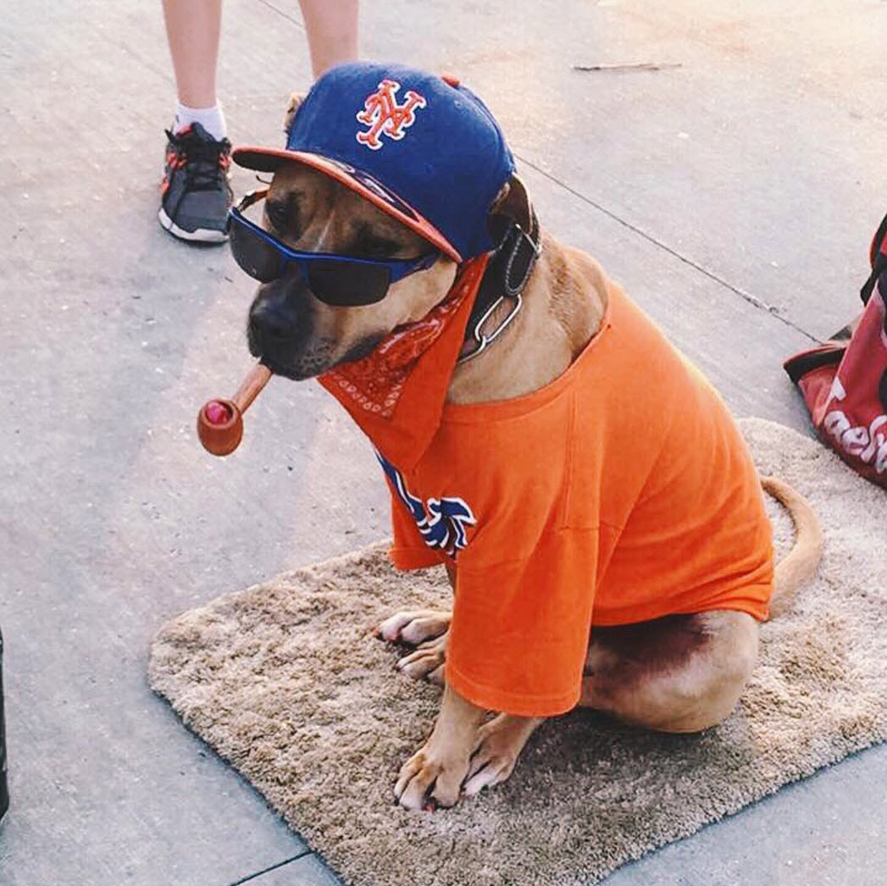
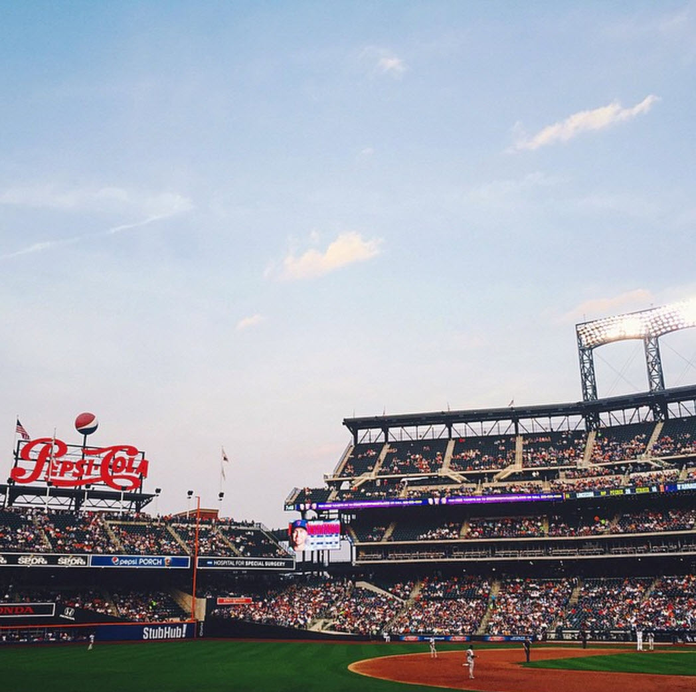
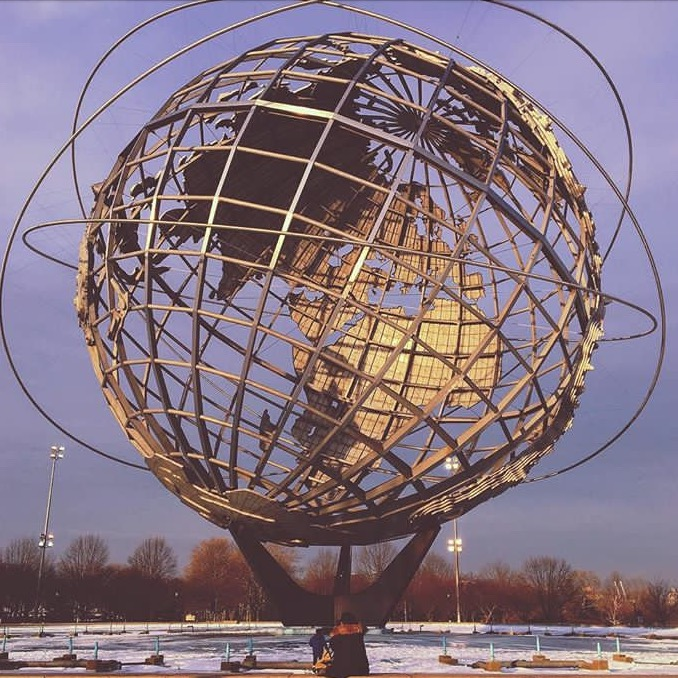
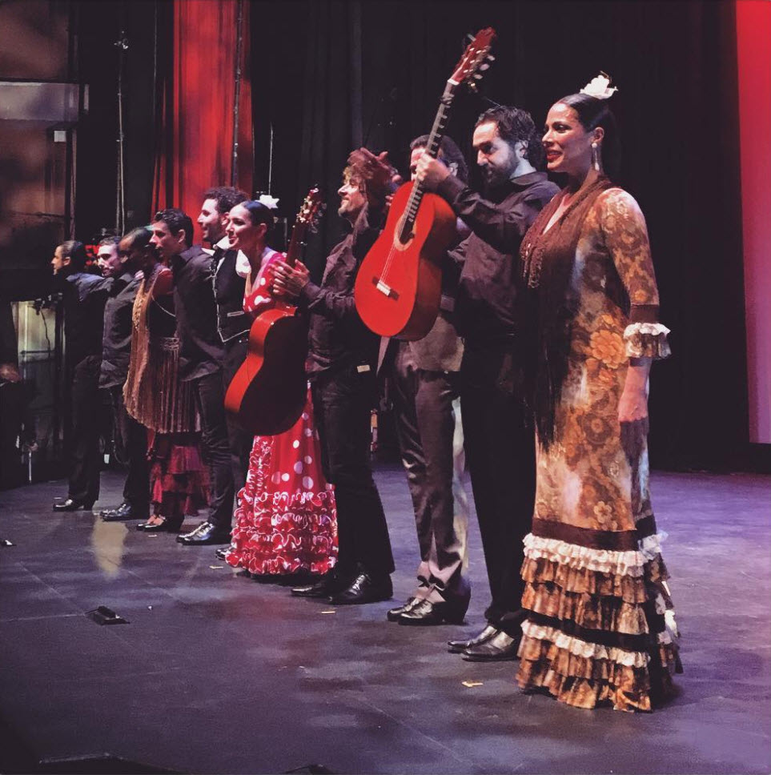
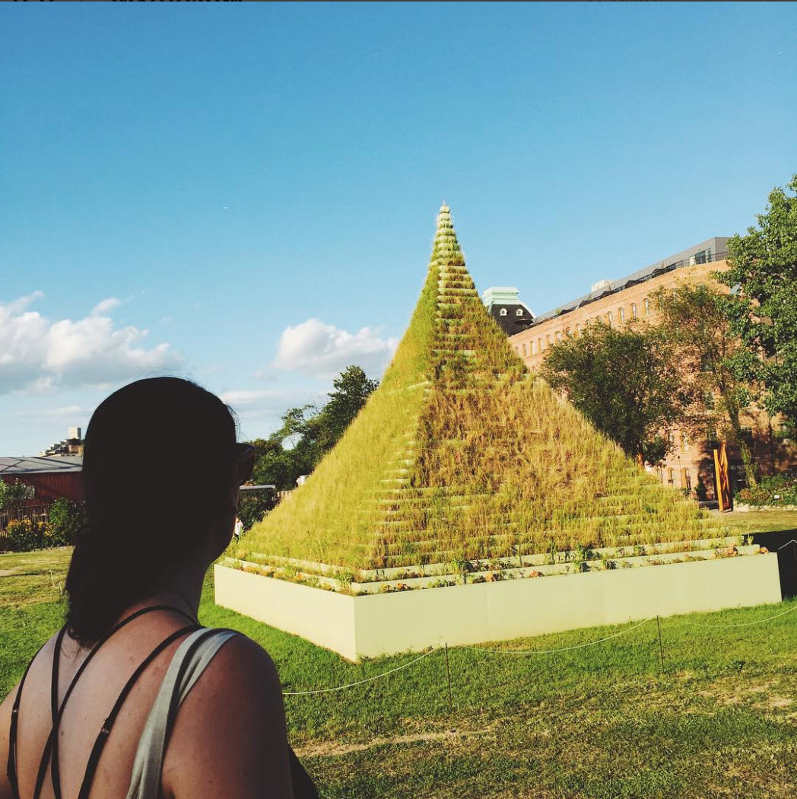
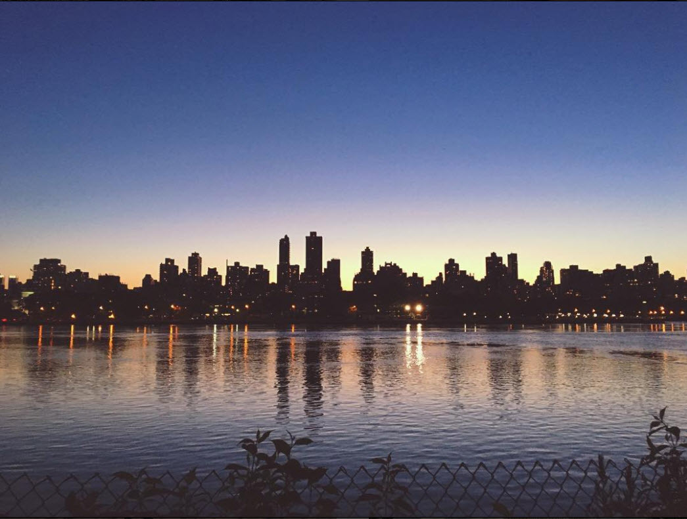

With adventurous art, international cuisine, gorgeous parks and world-class sporting events, Queens features attractions to satisfy nearly every taste. Sports lovers can watch the New York Mets play baseball at Citi Field and, in a venue nearly adjacent, see the US Open host the world's best tennis players. But in Queens, every day can be an event, whether you're sampling the delectable Greek cuisine of Astoria or authentic Chinese food in Flushing. View inventive art at MoMA PS1 and Socrates Sculpture Park in Long Island City, and take in the stunning flora at the Queens Botanical Garden.
Citi Field is a stadium located in Flushing Meadows Corona Park in the New York City borough of Queens. Completed in 2009, it is the home baseball park of Major League Baseball's New York Mets. Citi Field was built as a replacement for the formerly adjacent Shea Stadium, which opened in 1964 next to the site of the 1964-1965 World's Fair. Citi Field was designed by Populous (then HOK Sport), and is named after Citigroup, a New York financial services company which purchased the naming rights. The $850 million baseball park was funded with $615 million in public subsidies,including the sale of New York City municipal bonds which are to be repaid by the Mets plus interest. The payments will offset property taxes for the lifetime of the park. The Mets are receiving $20 million annually from Citibank in exchange for naming the stadium Citi Field. The entire public cost is being borne by city and state taxpayers in New York.
 
The site of two twentieth century World's Fairs attended by millions of people, Flushing Meadows Corona Park continues to draw and delight visitors. As the largest park in Queens, it offers plenty of space for whatever your recreational desires may be--baseball, soccer, tennis, cricket, et cetera. Lots more too, including a stunning recreation complex, a zoo, an art museum, a botanical garden, a science museum, and a baseball stadium. Explore one of the park's six playgrounds, take a stroll along the Flushing Bay Promenade, or launch your model airplane. Flushing Meadows Corona Park has room for all your active pursuits!
 
Socrates Sculpture Park is a community engaged New York City waterfront park dedicated to supporting artists in the production and presentation of public art. Socrates Sculpture Park was an abandoned riverside landfill and illegal dumpsite until 1986 when a coalition of artists and community members, under the leadership of artist Mark di Suvero, transformed it into an open studio and exhibition space for artists and a neighborhood park for local residents. Today it is an internationally renowned outdoor museum and artist residency program that also serves as a vital New York City park offering a wide variety of free public services.
 